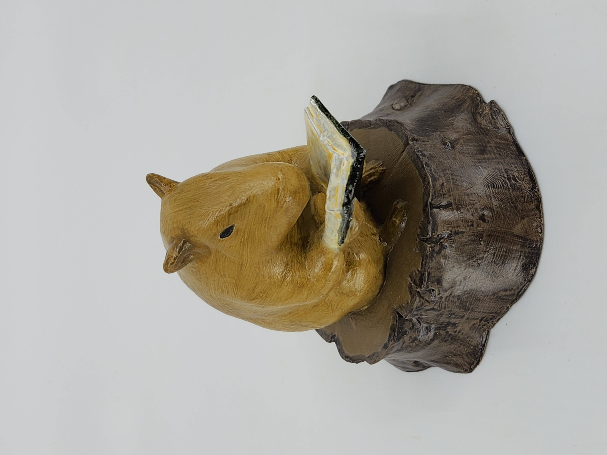
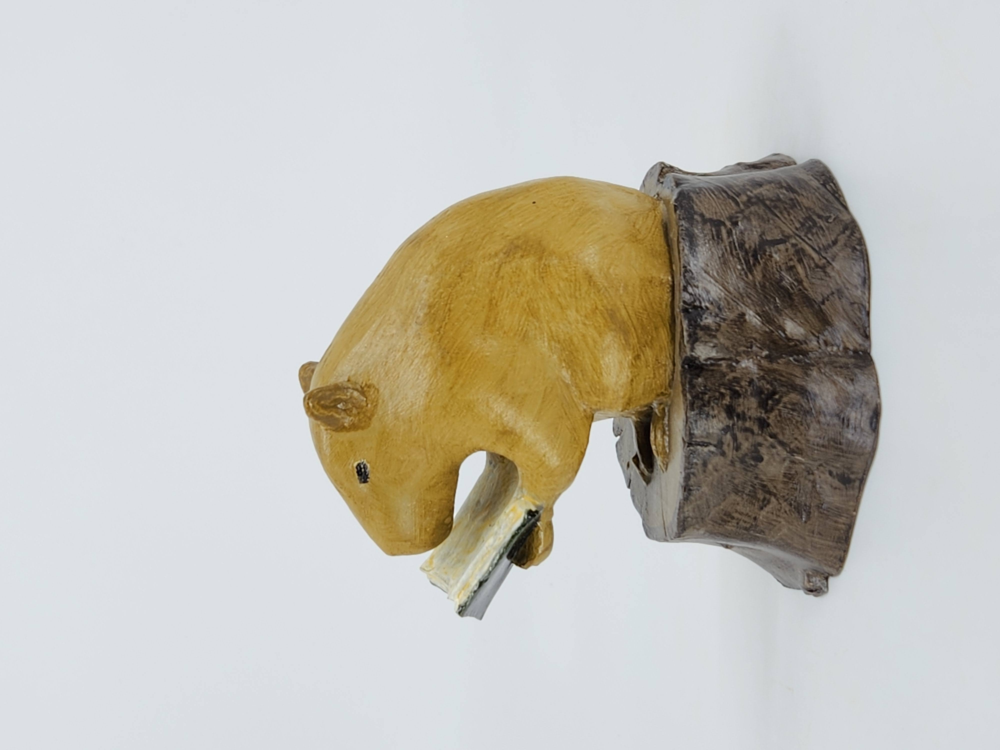
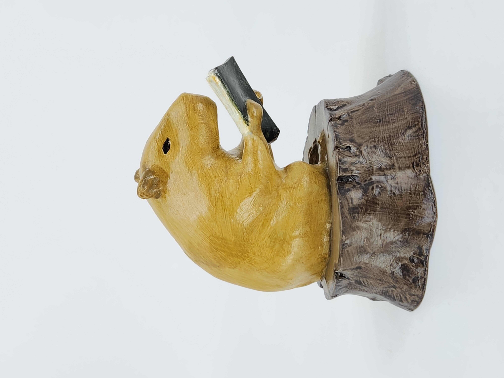
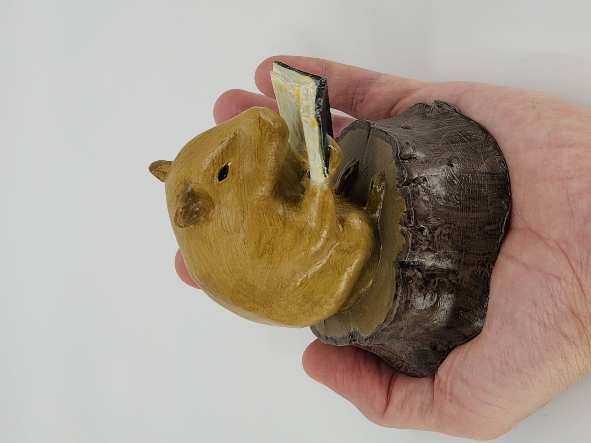

Capivara Lendo

A "Capivara Lendo" é uma peça única, com um estilo mais orgânico e natural. A escultura foca em capturar a leveza do momento em que a capivara se dedica à leitura, com um formato que lembra mais uma peça de madeira entalhada à mão.
Detalhes Técnicos
Medidas: 9,5cm (altura) x 9cm (largura) x 9,2cm (comprimento)
Peso: 300g (maciça)
Produção: Agosto - Setembro de 2025
Materiais: Resina UV, resina epóxi, resina poliéster e calcita.
Acabamento: Pintada com tinta acrílica e envernizada com verniz acrílico fosco. Apenas a capa do livro e os olhos receberam verniz acrílico brilhante.
Galeria



